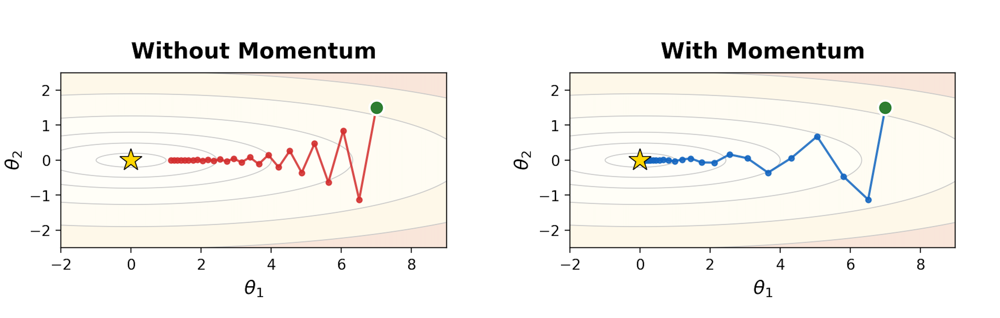

| Method | State | Update Rule | Comment |
|---|---|---|---|
| Vanilla GD | none | $\theta_{t+1}=\theta_t-\alpha \nabla f(\theta_t)$ | Follow the current gradient; can zig-zag in narrow valleys |
| Momentum | $m_t$ for direction | $m_t=\beta m_{t-1}+(1-\beta)\nabla f(\theta_t);\;\theta_{t+1}=\theta_t-\alpha m_t$ | Smooth gradients to build inertia: accelerate consistent directions, damp oscillations |
| RMSProp | $v_t$ for scale | $v_t=\rho v_{t-1}+(1-\rho)(\nabla f(\theta_t))^{\odot 2};\;\theta_{t+1}=\theta_t-\alpha\frac{\nabla f(\theta_t)}{\sqrt{v_t}+\epsilon}$ | Adapt step size per-parameter: big recent gradients → smaller steps |
| Adam | $m_t$ and $v_t$ | $\hat m_t=\frac{m_t}{1-\beta_1^t},\;\hat v_t=\frac{v_t}{1-\beta_2^t};\;\theta_{t+1}=\theta_t-\alpha\frac{\hat m_t}{\sqrt{\hat v_t}+\epsilon}$ | Direction + normalization with early-step bias correction |
Part I: Momentum — from “follow the slope” to “build velocity”

Vanilla gradient descent: reactive, step-by-step
Let’s start from the most basic update rule. Suppose we want to minimize an objective $f(\theta)$. Vanilla gradient descent updates parameters by moving against the gradient:
$$ \theta_{t+1} = \theta_t - \alpha \nabla f(\theta_t) $$
where $\alpha$ is the learning rate.
This rule is fully reactive: the step at time $t$ depends only on the current gradient. That can work, but it has a well-known failure mode in ill-conditioned landscapes (think “long narrow valleys”):
- Along the steep direction, gradients are large → updates overshoot and flip sign.
- Along the flat direction, gradients are small → progress is slow.
- Net effect: zig-zagging and wasted steps.
A useful mental image: vanilla GD is like a person who looks at the slope under their feet each step and immediately turns to face the steepest downhill direction. In a narrow valley, they keep bouncing between the two sides instead of making steady progress along the valley floor.
A small idea: don’t forget the past
If gradients keep pointing in a roughly consistent direction (even if noisy), we can exploit that by accumulating them. Instead of directly using $\nabla f(\theta_t)$ as the step, we maintain a running direction that blends history with the present.
This is the core of momentum:
- keep a momentum vector $m_t$,
- update it as an exponential moving average of gradients,
- update parameters using that momentum.
Gradient descent with momentum: add velocity
One common form (often called heavy-ball momentum) is:
$$ m_t = \beta m_{t-1} + \nabla f(\theta_t), \quad \theta_{t+1} = \theta_t - \alpha m_t $$
where $\beta \in [0,1)$ is the momentum coefficient (often $0.9$).
- $m_t$ is a smoothed gradient: it keeps a memory of where gradients have been pointing.
- When gradients are consistent, $m_t$ grows in that direction → accelerates progress.
- When gradients oscillate (like across a valley wall), the positive/negative contributions partially cancel → damps zig-zagging.
You can also view this as an exponential moving average (EMA). Unrolling the recursion gives roughly:
$$ m_t \approx \sum_{k=0}^{t} \beta^{\,t-k} \nabla f(\theta_k) $$
so older gradients are still present, but exponentially down-weighted.
Part II: RMSProp — from “one learning rate” to “adaptive step sizes”
Why momentum isn’t the full story
Momentum fixes a key weakness of vanilla gradient descent: it reduces zig-zagging by smoothing gradients over time and building a velocity in consistent directions.
But momentum still uses a single global learning rate $\alpha$ for all parameters and all directions. In many objectives, different coordinates can have very different curvature / gradient scales.
The core idea: normalize by recent gradient magnitude
RMSProp maintains a running (exponentially-decayed) average of squared gradients:
$$ v_t = \rho v_{t-1} + (1-\rho)\, \nabla f(\theta_t)^{\odot2} $$
where $\rho \in [0,1)$ is typically close to $1$ (e.g. $0.9$ or $0.99$).
Then update parameters by dividing by the root mean square of recent gradients:
$$ \theta_{t+1} = \theta_t - \alpha \frac{\nabla f(\theta_t)}{\sqrt{v_t} + \epsilon} $$
Because of the denominator $\sqrt{v_t}$:
- If a coordinate has large gradients consistently, $v_t$ becomes large, so the effective step size in that coordinate shrinks.
- If a coordinate has small gradients consistently, $v_t$ stays small, so the effective step size becomes relatively larger.
So RMSProp behaves like an automatic, per-parameter learning-rate tuner: it helps stabilize steep directions without forcing the whole optimizer to slow down.
Adam: Momentum + RMSProp (with bias correction)
At this point we have two complementary ideas:
- Momentum smooths gradients over time, reducing zig-zagging and helping consistent progress.
- RMSProp rescales updates using a running average of squared gradients, giving per-parameter adaptive step sizes.
Adam (Adaptive Moment Estimation) combines both by tracking:
- a first-moment estimate (EMA of gradients), and
- a second-moment estimate (EMA of squared gradients),
then using the ratio to form the update.
Step 1: Exponential moving averages of the 1st and 2nd moments
$$ m_t = \beta_1 m_{t-1} + (1-\beta_1)\,\nabla f(\theta_t) $$
$$ v_t = \beta_2 v_{t-1} + (1-\beta_2)\,(\nabla f(\theta_t))^{\odot 2} $$
- $\beta_1$ plays the role of momentum (typical: $0.9$).
- $\beta_2$ controls how slowly the second-moment estimate changes (typical: $0.999$).
Step 2: Bias correction
We usually initialize $m_0 = 0$ and $v_0 = 0$. Early in training, these EMAs are biased toward zero because they haven’t had time to “warm up”. Adam corrects this using:
$$ \hat{m}_t = \frac{m_t}{1-\beta_1^t}, \qquad \hat{v}_t = \frac{v_t}{1-\beta_2^t} $$
Bias correction matters most at the beginning; later, $(1-\beta_1^t)$ and $(1-\beta_2^t)$ approach 1, so the correction fades out.
Step 3: The Adam update
$$ \theta_{t+1} = \theta_t - \alpha \frac{\hat{m}_t}{\sqrt{\hat{v}_t} + \epsilon} $$
This mirrors the “RMSProp normalization” idea, but replaces the raw gradient with a momentum-like direction $\hat{m}_t$.
Appendix: Why the gradient points toward the steepest increase
At a point $\theta$, the gradient $\nabla f(\theta)$ points in the direction of steepest increase of $f$, and its magnitude gives the maximum rate of increase.
Take a small step from $\theta$ in some direction $u$ with $|u|_2 = 1$. Using a first-order Taylor expansion,
$$ f(\theta+\epsilon u) \approx f(\theta) + \epsilon \nabla f(\theta)^\top u $$
so the directional derivative is $D_u f(\theta) = \nabla f(\theta)^\top u$.
By Cauchy–Schwarz, this is maximized when $u$ is aligned with the gradient. Therefore the steepest ascent direction is $u^\star = \frac{\nabla f(\theta)}{|\nabla f(\theta)|_2}$, and gradient descent uses its negative.